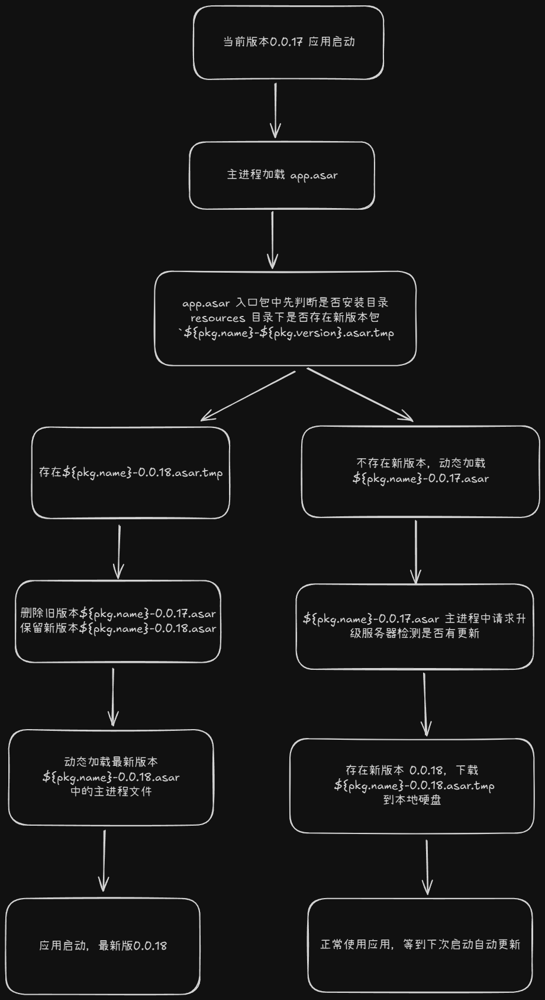
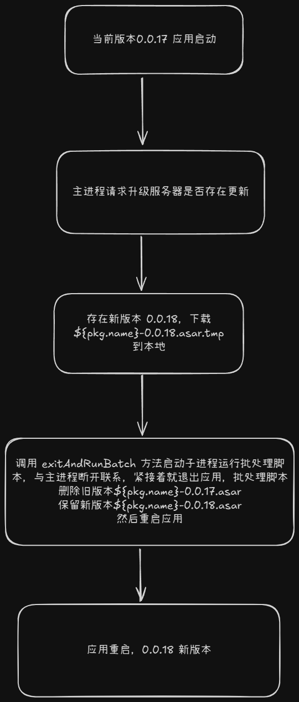

asar 增量更新
通过观察发现 electron-builder 和 electron-updater 实现的差分更新，并不能节省多少下载的带宽，这时候就需要实现只更新 asar 包的增量更新，1 包的体积小，更能节省带宽，提升更新的速度，用户体验好。
两种方案
-
不管是哪种方案，
asar更新的本质都是- 下载新版本的
asar包 - 关闭软件之后用新版本包覆盖旧版本包
- 重启软件更新完成
- 下载新版本的
-
所以两种方案的区别就在于关闭软件之后覆盖文件的方式不同，因为软件正在运行的途中，
asar包处于锁定状态，是无法覆盖的，所以就是为了解决覆盖文件的问题- 第一种是双
asar包方案，软件会生成两个asar包，electron-builder默认打包生成的app.asar作为入口包，软件启动后还是从app.asar启动，但是app.asar的代码里只存放检测新版本文件和覆盖的逻辑，做完覆盖操作后就使用require或者import动态导入main-v1.0.0.asar这个主asar包，所有软件的业务逻辑都在主包中 - 第二种逻辑简单一些，检查升级服务器是否存在新版本包，如果存在就下载下来，下载成功后立即退出软件，同时启动一个子进程，与软件主进程脱离关系，主进程退出后执行一个批处理脚本（或者 shell 脚本）覆盖操作，覆盖成功后再重启软件。所有的覆盖逻辑还有重启逻辑都在批处理脚本中
- 第一种是双
-
优缺点分析：
- 双
asar方案缺点是会出现两个版本号，因为asar包中必须存在package.json文件，因此当主包升级后，主包版本号会和入口包版本号不一致，解决办法是实现一个方法，需要读取版本号的时候都要去读取主包内的package.json的版本号。双包方案实现起来略微有些复杂 - 批处理脚本的优点是，实现起来简单，缺点是有可能批处理脚本的操作会被杀毒软件认为是病毒操作，被误杀
- 双
双 asar 方案

批处理方案
